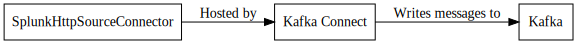

SplunkHttpSourceConnector¶
The Splunk Source connector allows emulates a Splunk Http Event Collector to allow application that normally log to Splunk to instead write to Kafka. The goal of this plugin is to make the change nearly transparent to the user. This plugin currently has support for X-Forwarded-For so it will sit behind a load balancer nicely.
Important
This connector listens on a network port. Running more than one task or running in distributed mode can cause some undesired effects if another task already has the port open. It is recommended that you run this connector in Standalone Mode.
Configuration¶
| Name | Type | Importance | Default Value | Validator | Documentation |
|---|---|---|---|---|---|
| kafka.topic | String | High | This value contains the topic that the messages will be written to. If topic per index is enabled this will be the prefix for the topic. If not this will be the exact topic. | ||
| splunk.collector.index.default | String | High | The index that will be used if no index is specified in the event message. | ||
| splunk.ssl.key.store.password | Password | High | The password for opening the keystore. | ||
| splunk.ssl.key.store.path | String | High | The path to the keystore on the local filesystem. | ||
| splunk.port | Int | High | 8088 | The port to configure the http listener on. | |
| topic.per.index | Boolean | Medium | false | Flag determines if the all generated messages should be written toa single topic or should the messages be placed in a topic prefixed by the supplied index. If true the kafka.topic setting will be concatenated along with the index name. If false the kafka.topic value will be used for the topic. | |
| backoff.ms | Int | Low | 100 | The number of milliseconds to back off when there are no records in thequeue. | |
| batch.size | Int | Low | 10000 | Maximum number of records to write per poll call. | |
| splunk.collector.index.allowed | List | Low | [] | The indexes this connector allows data to be written for. Specifying an index outside of this list will result in an exception being raised. | |
| splunk.collector.url | String | Low | /services/collector/event | Path fragement the servlet should respond on | |
| splunk.ssl.renegotiation.allowed | Boolean | Low | true | Flag to determine if ssl renegotiation is allowed. |
Property based example¶
This configuration is used typically along with standalone mode.
name=connector1
tasks.max=1
connector.class=com.github.jcustenborder.kafka.connect.splunk.SplunkHttpSourceConnector
# The following values must be configured.
kafka.topic=
splunk.collector.index.default=
splunk.ssl.key.store.password=
splunk.ssl.key.store.path=
Rest based example¶
This configuration is used typically along with distributed mode. Write the following json to connector.json, configure all of the required values, and use the command below to post the configuration to one the distributed connect worker(s).
{
"name": "connector1",
"config": {
"connector.class": "com.github.jcustenborder.kafka.connect.splunk.SplunkHttpSourceConnector",
"kafka.topic":"",
"splunk.collector.index.default":"",
"splunk.ssl.key.store.password":"",
"splunk.ssl.key.store.path":"",
}
}
Use curl to post the configuration to one of the Kafka Connect Workers. Change http://localhost:8083/ the the endpoint of one of your Kafka Connect worker(s).
curl -s -X POST -H 'Content-Type: application/json' --data @connector.json http://localhost:8083/connectors